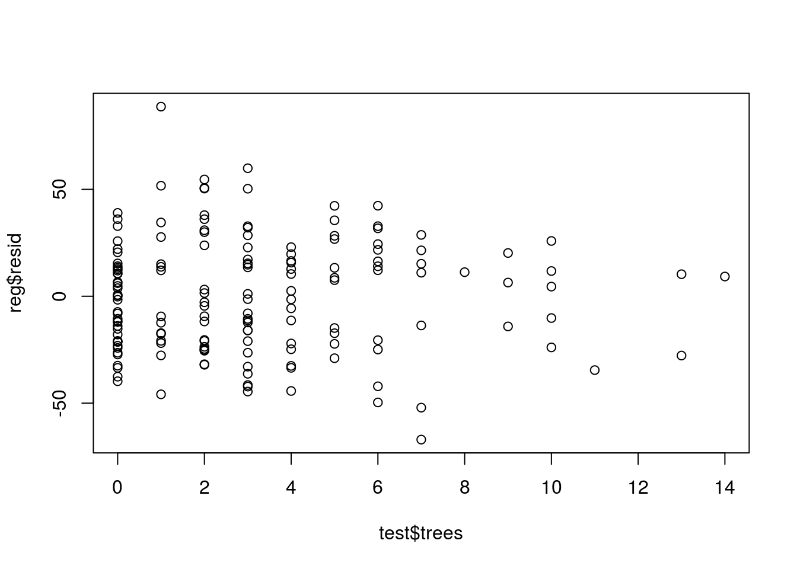
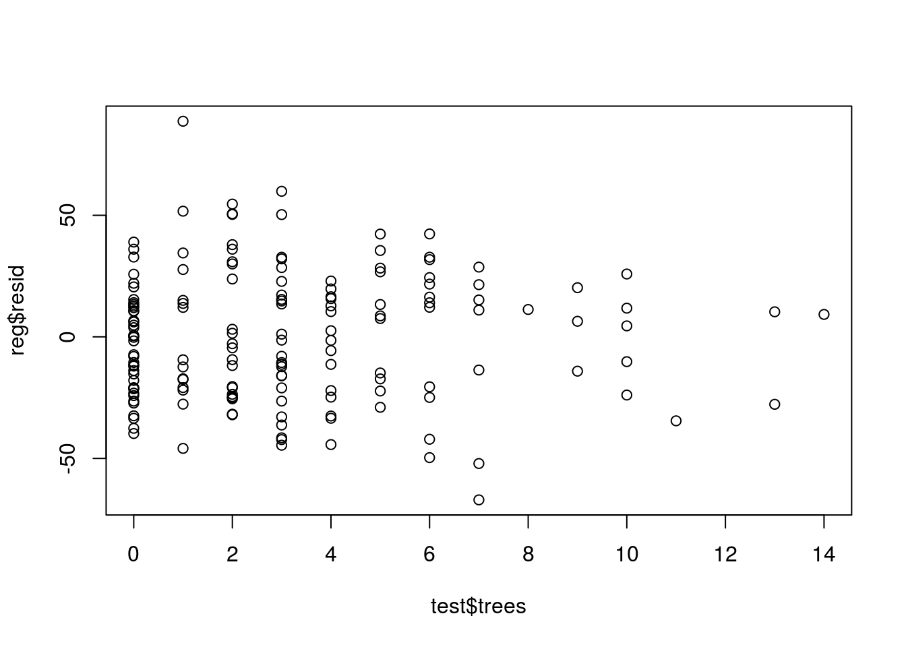
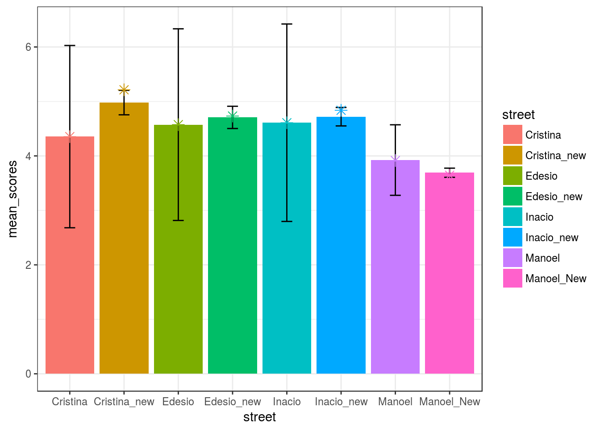
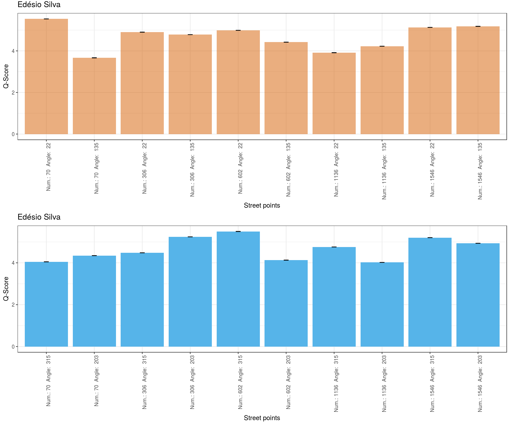
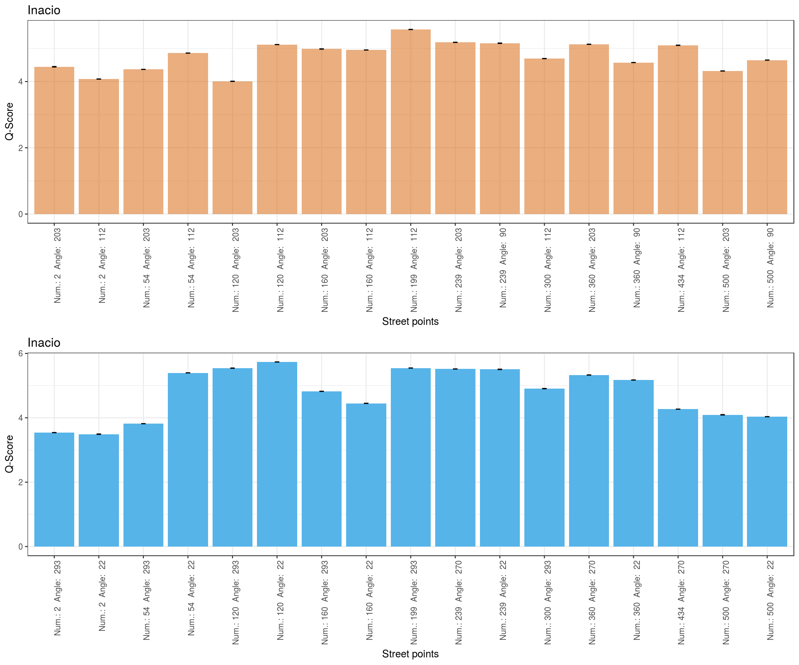
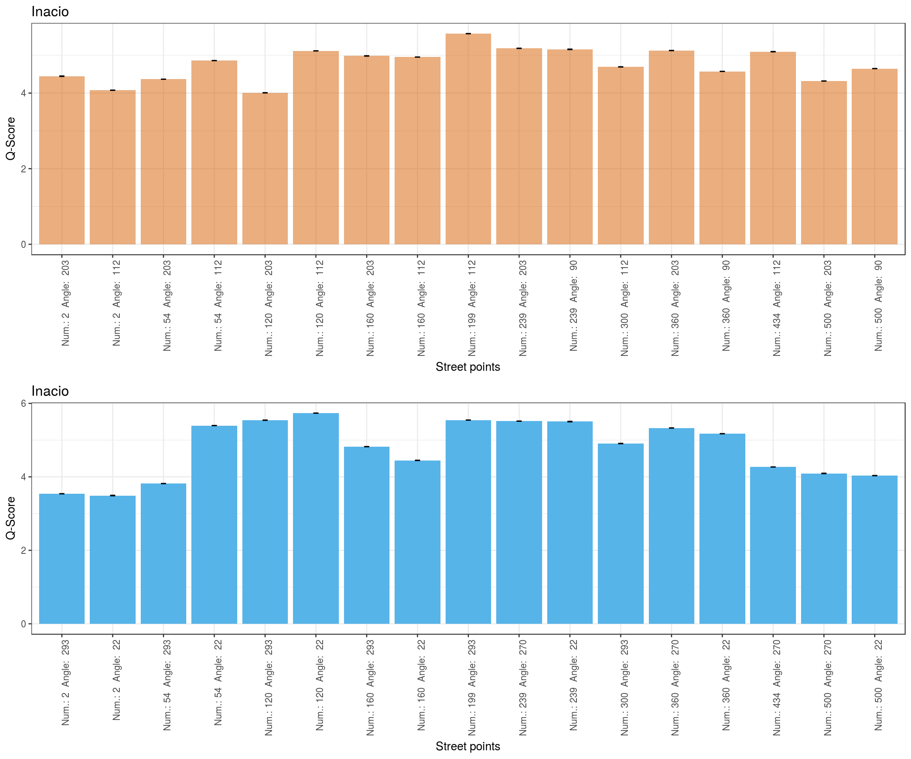

analisaPorRua
Os estudos de percepção realizados até o momento têm focado em capturar diversas imagens espalhadas pela cidade, obter os QScores/preferências das pessoas e treinar modelos de mais baixo nível ou alto nível (vide nosso artigo do HT ou o artigo com índice de ceu, verde, etc.) para predizer preferências para novas fotos que ainda não foram avaliadas por pessoas (visão macro). Com isso surgem alguns pontos a serem considerados:
- A coleta nos artigos gera uma pergunta: Ao escolhermos pontos tão esparsos estamos considerando a média dos ambientes, isso é representativo?
- No Place Pulse são coletadas mais de uma imagem por local (2 ou mais direções) para lidar com variação e foram 1.706 imagens para NY, 1.236 para Boston, 544 para Salzburg e 650 para Linz
- Na análise dos Q-Scores por dados de homícidio usa-se a média no zip-code;
- Na segunda versão do Place Pulse tem-se 2984 pontos coletados em São Paulo e se considerarmos o total de 48.623 ruas da cidade, mesmo se fosse um ponto por rua foram cobertos 6,1% das ruas (pouca cobertura!).
teste <- read.csv("/local/david/workspace_doutorado/Place Pulse/pp2_20161010/votes.csv", header=TRUE)#/local/david/workspace_doutorado/Place Pulse/pp2_20161010/votes.csv
lat_min <- -23.401371#Sao Paulo
lat_max <- -24.006227
lon_min <- -46.334217
lon_max <- -46.821569
left_ids <- filter(teste, (teste$left_lat >= lat_max & teste$left_lat <= lat_min) & (teste$left_long >= lon_max & teste$left_long <= lon_min))$left_id
right_ids <- filter(teste, (teste$right_lat >= lat_max & teste$right_lat <= lat_min) & (teste$right_long >= lon_max & teste$right_long <= lon_min))$right_id
length(unique(append(left_ids, right_ids)))## [1] 2984 #https://super.abril.com.br/cultura/quantas-ruas-existem-em-sao-paulo/- No Urban Gems, cena aleatória dentro de 300m do metrô e dentro dos bounding-box de áreas de censo. 258 Street View e 310 do Geograph, múltiplas visões do local
- No Como é Campina? escolhemos pontos distantes 50m, dentro dos setores censitários.
- Pela análise do Como é Campina?, focando em divergências, nós encontramos 11 pontos (22 imagens), para o agradável, com diferenças no Q-Score maiores que 1 ponto. Diferenças maiores que 1 ponto, para o agradável, conduziram a diferenças de 25 a 107 posições no ranking e de 26 a 107 posições, para segurança.
- Podemos considerar a variação nas médias e ICs quando temos mais imagens e quando só temos 2 ou 3 imagens por rua
- Os modelos treinados com estes conjuntos de dados tendem a capturar as tendências médias, o típico presente nos dados. E se pensarmos em analisar outro contexto social, ruas de outros locais ou, ainda, traçar um panorama detalhado de alguma rua?
- Em relação ao contexto social podemos pensar em lidar capturando preferências dos diferentes segmentos sociais, diferentes culturas
Em relação às ruas de outras cidades podemos pensar em capturar imagens de outras cidades, cujo contexto seja mais parecido com o contexto da cidade que queremos avaliar
- Exemplos:
- Alguns casos interessantes.
Amostra anterior: A imagem abaixo teve nota 4.30 (posição 28) mesmo contendo casas bem mantidas e árvores, por conta do terreno!

- Amostra Atual: A imagem primeira imagem tem um bom nível de manutenção, árvores e calçadas razoáveis, todavia pelos restos de construção teve uma nota menor e comparável a um terreno baldio da segunda imagem. As imagens 1, 2, 4 e 5, apesar de bem distintos quanto a árvores, manutenção tiveram notas parecidas!


O grande ponto positivo destas análises é aprender melhor sobre características médias presentes nos locais que favorecem ou não as preferências e aprender um pouco sobre o as preferências típicas dos votantes em relação a essas características. Por não termos visão completa, cheiro, etc. tipicamente justifica-se como limitação para gerar a percepção do local!
- Existe uma discussão no urbanismo sobre top-down e bottom-up design (https://books.google.com.br/books?id=M-H0AgAAQBAJ&pg=PA255&lpg=PA255&dq=what+is+opposed+to+bird%27s+eye+view+urbanism&source=bl&ots=8owGSyzJpv&sig=8bFt7WNHhCuNqKmvwMclv9XQlt8&hl=pt-BR&sa=X&ved=0ahUKEwjS8Ifqq7rZAhWCkZAKHU9QCyoQ6AEITDAJ#v=onepage&q=what%20is%20opposed%20to%20bird's%20eye%20view%20urbanism&f=false):
- top-down, bird’s eye view, plan mostra a organização, não a experiência, a qualidade, o charme, nossa ligação emocional com a cidade do dia a dia
- Incorporar os locais e seu conhecimento no planejamento precisa de uma abordagem bottom-up
- Uma cidade projetada com foco no landscape não pode ser apreciada por uma visão bird’s eye. Estilos de arquitetura, escala humana não podem ser experimentados por esta visão.
- E o panorama detalhado da rua (visão micro)? Precisamos ter ideias mais precisas de como são as várias ruas daquela cidade, suas particularidades, para que os modelos treinados com esses dados possam reproduzir mais fielmente as preferências das pessoas sobre aqueles locais? Com essa ideia estamos buscando descrever, encontrar problemas/virtudes, avaliar as particularidades, ou o que podemos ganhar/perder, pensando em captura de percepções em um nível mais micro em relação à captura de percepção em um nível mais macro.
- Se para nos aproximarmos de modelos/descrições mais detalhadas de ruas precisamos de muitos dados/fotos da cidade, começamos a nos deparar com alguns problemas:
- As grandes bases que existem (PlacePulse, UrbanGems, StreetSeen?) pouco tem do contexto sub-desenvolvido, particularmente do contexto brasileiro;
- Mesmo no contexto brasileiro, temos aspectos sociais, culturais e cidades bem distintas entre as várias partes do país
Estamos pensando em o que fazer com esses dados, como computar e apresentar pontos úteis no mundo micro! Para tentar avaliar melhor esses aspectos, foram escolhidas 6 ruas de Campina Grande, 20 fotos por rua (5 pontos da rua x 4 ângulos), para avaliação quanto à questão agradável. 3 dessas ruas apresentaram os pontos de maior divergência de percepção em nossa análise anterior (Edésio Silva, Inácio Marques e Cristina Procópio), uma rua apresentou o ponto de maior homogeneidade (Manoel Pereira), porém com notas baixas, e as outras ruas são pontos importantes do centro da cidade (Maciel Pinheiro e Floriano Peixoto), que tem uma tendência de homogeneidade, com notas boas.
As fotos de cada ruas foram comparadas com as de outras ruas, ao invés de apenas naquela rua, de modo que possamos comparar as ruas entre si e, também, tenhamos uma maior variação de tipos de locais comparados entre si.
Alguns questionamentos foram inicialmente levantados:
- Na média as ruas são parecidas ou não? Tem alguma rua que parece muito boa ou muito ruim?
- Será que ruas que são parecidas na média, são de fato similares?
- Podemos descrever cada rua? Problemas/virtudes (pontos notáveis)?
Caracterização Geral
Tamanho das amostras
Abaixo temos, primeiramente, uma análise, para determinar o tamanho da amostra para 95% de confiança. Em seguida, temos a comparação do ranking geral da amostra atual contendo 330 pessoas (138 pessoas que não são de Campina e 157 que são daqui), com a amostra de 29 usuários (primeira amostra analisada, só de moradores) e com a amostra de 69 pessoas (sendo também todos moradores de Campina).
#Checking sample size
current_data <- read.table("all100/all_ordenado.dat")
current_data$sd <- apply(current_data[,4:ncol(current_data)], 1, sd)
current_data$n <- ( 1.96 * current_data$sd / 0.2) ** 2 #All QScores
print(">>>> Maior e menor amostra necessária ")## [1] ">>>> Maior e menor amostra necessária "print(max(current_data$n))## [1] 0.3401999print(min(current_data$n))## [1] 0.00431684#Checking rankings similarity
mergeSort <- function(x){
if(length(x) == 1){
inv <- 0
} else {
n <- length(x)
n1 <- ceiling(n/2)
n2 <- n-n1
y1 <- mergeSort(x[1:n1])
y2 <- mergeSort(x[n1+1:n2])
inv <- y1$inversions + y2$inversions
x1 <- y1$sortedVector
x2 <- y2$sortedVector
i1 <- 1
i2 <- 1
while(i1+i2 <= n1+n2+1){
if(i2 > n2 || (i1 <= n1 && x1[i1] <= x2[i2])){
x[i1+i2-1] <- x1[i1]
i1 <- i1 + 1
} else {
inv <- inv + n1 + 1 - i1
x[i1+i2-1] <- x2[i2]
i2 <- i2 + 1
}
}
}
return (list(inversions=inv,sortedVector=x))
}
numberOfInversions <- function(x){
r <- mergeSort(x)
return (r$inversions)
}
normalizedKendallTauDistance2 <- function(data1, data2){
x <- data1
y <- data2
tau = numberOfInversions(order(x)[rank(y)])
print(tau)
nItens = length(x)
maxNumberOfInverstions <- (nItens*(nItens-1))/2
normalized = tau/maxNumberOfInverstions
print (normalized)
}
data29 <- read.table("29users/all_ordenado.dat")
d29_cur <- merge(select(data29, V2, V3), select(current_data, V2, V3), by = "V2")
print(cor.test(d29_cur$V3.x, d29_cur$V3.y, method = "kendall"))##
## Kendall's rank correlation tau
##
## data: d29_cur$V3.x and d29_cur$V3.y
## z = 9.9878, p-value < 2.2e-16
## alternative hypothesis: true tau is not equal to 0
## sample estimates:
## tau
## 0.7607595print(cor.test(d29_cur$V3.x, d29_cur$V3.y, method = "spearman"))##
## Spearman's rank correlation rho
##
## data: d29_cur$V3.x and d29_cur$V3.y
## S = 6330, p-value < 2.2e-16
## alternative hypothesis: true rho is not equal to 0
## sample estimates:
## rho
## 0.9258087print(paste(">>>> Kendall Distance ", normalizedKendallTauDistance2(d29_cur$V3.x, d29_cur$V3.y)))## [1] 1642
## [1] 0.5196203
## [1] ">>>> Kendall Distance 0.519620253164557"data69 <- read.table("69users/all_ordenado.dat")
d69_cur <- merge(select(data69, V2, V3), select(current_data, V2, V3), by = "V2")
print(cor.test(d69_cur$V3.x, d69_cur$V3.y, method = "kendall"))##
## Kendall's rank correlation tau
##
## data: d69_cur$V3.x and d69_cur$V3.y
## z = 10.744, p-value < 2.2e-16
## alternative hypothesis: true tau is not equal to 0
## sample estimates:
## tau
## 0.8183544print(cor.test(d69_cur$V3.x, d69_cur$V3.y, method = "spearman"))##
## Spearman's rank correlation rho
##
## data: d69_cur$V3.x and d69_cur$V3.y
## S = 3914, p-value < 2.2e-16
## alternative hypothesis: true rho is not equal to 0
## sample estimates:
## rho
## 0.9541256print(paste(">>>> Kendall Distance ", normalizedKendallTauDistance2(d69_cur$V3.x, d69_cur$V3.y)))## [1] 1393
## [1] 0.4408228
## [1] ">>>> Kendall Distance 0.440822784810127"Comparação entre rankings de moradores e não moradores
O processo de separação de quem é ou não de Campina obedeceu as seguintes regras:
- O usuário informando se é morador ou não ou através do IP;
- Para os que não são moradores, foi verificado se ele informou se conhece a cidade e se estuda, mora ou trabalha aqui. Nestes casos, estes usuários foram adicionados ao conjunto de moradores (arquivo users_notcampina_campina.dat);
- Por fim, alguns usuários que não responderam ao questionário mas foram identificados pelo pesquisador como ex-moradores da cidade, também foram adicionados ao conjunto de moradores.
Feita a seleção de quem é morador e não morador de Campina temos, atualmente, 157 moradores e 138 não moradores. Quão parecido é o ranking geral de moradores e não moradores?
##
## Kendall's rank correlation tau
##
## data: camp_notcampina$V3.x and camp_notcampina$V3.y
## z = 11.309, p-value < 2.2e-16
## alternative hypothesis: true tau is not equal to 0
## sample estimates:
## tau
## 0.6983193##
## Spearman's rank correlation rho
##
## data: camp_notcampina$V3.x and camp_notcampina$V3.y
## S = 33112, p-value < 2.2e-16
## alternative hypothesis: true rho is not equal to 0
## sample estimates:
## rho
## 0.8850198## [1] 3237
## [1] 0.4533613
## [1] ">>>> Kendall Distance 0.453361344537815"Composição social de todos os usuários

Composição social de moradores de Campina

Composição social de não moradores de Campina

Ranking Geral
Computados os QScores as 10 melhores e 10 piores imagens avaliadas estão apresentadas abaixo juntamente com as interseções das marcações dos usuários do porquê as escolheram como melhor ou pior imagem dentre as 4 apresentadas nas tarefas.
Top ../percepcaoLocal/agradavel/melhores/intersects/
Bottom ../percepcaoLocal/agradavel/piores/intersects/
Top ../percepcaoLocal/agradavel/melhorescampina/intersects/
Bottom ../percepcaoLocal/agradavel/piorescampina/intersects/
Top ../percepcaoLocal/agradavel/melhoresnotcampina/intersects/
Bottom ../percepcaoLocal/agradavel/pioresnotcampina/intersects/
Top diff 7 Tail diff 6
Qualitativamente analisando estas imagens, conforme esperado, percebe-se que vegetação, melhor estado de manutenção e a rua mais larga conduziram a melhores avaliações das imagens. O céu também foi um fator apontado em 4 das 10 fotos e que não foi computado em nossas avaliações anteriores. É importante destacar que a Cristina Procópio (tipicamente residencial) teve 5 dos 10 melhores, a Floriano Peixoto (comercial) teve 4 locais e a Edésio Silva 1 local (tipicamente residencial).
Para as imagens com pior avaliação, a presença de itens na rua (barracas mal cuidadas, itens velhos, itens de venda, lixo, etc.) juntamente com prédios mal cuidados geraram maior desconforto. É importante destacar que os 9 dos 10 locais com pior avaliação se localizam na Manoel Araújo, uma rua de comércio antiga e pouco cuidada no centro da cidade.
Alguns pontos a se questionar olhando todas as marcações:
- Algumas imagens da Manoel Pereira de Araújo e outros locais degradados foram marcados como melhores, apresentando poucos votos 1, 2 a 5 pessoas -> confusão na questão, preferência mesmo (algumas marcações no céu azul, prédios conservados)?
- Algumas imagens da Floriano, Maciel e Museu marcadas como piores -> confusão, preferência (carros, estilos de lojas)?
Realizando a análise da regressão dos QScores frente: # de árvores, nota de landscape, largura de rua, largura de calçada e número de prédios com identificadores
## Loading required package: sp## Loading required package: Matrix## Loading required package: spData## To access larger datasets in this package, install the spDataLarge
## package with: `install.packages('spDataLarge')`


 

##
## Moran I test under randomisation
##
## data: residuals
## weights: neigh2
##
## Moran I statistic standard deviate = -1.1089, p-value = 0.2675
## alternative hypothesis: two.sided
## sample estimates:
## Moran I statistic Expectation Variance
## -1.031807e-02 -8.403361e-03 2.981595e-06## Length Class Mode
## statistic 1 -none- numeric
## p.value 1 -none- numeric
## estimate 3 -none- numeric
## method 1 -none- character
## alternative 1 -none- character
## data.name 1 -none- character##
## Global Moran I for regression residuals
##
## data:
## model: lm(formula = rank ~ street_wid + sidewalk_wid + landscape +
## trees + build_ident, data = res, na.action = na.exclude)
## weights: neigh2
##
## Moran I statistic standard deviate = -1.4388, p-value = 0.1502
## alternative hypothesis: two.sided
## sample estimates:
## Observed Moran I Expectation Variance
## -1.031807e-02 -7.902098e-03 2.819546e-06Realizando a mesma regressão acima para moradores e não moradores de forma separada, percebe-se:
- Sidewalk width mais significativo e influente para moradores (média);
- Landscape igualmente significativo nos 3, mais influente para moradores (média);
- Trees mais significativo no geral e não moradores e mais influente para eles (média);
- Builds ids igualmente significativo nos 3, mais influente para não moradores (média);
- Os ICs apontam similaridade entre todos os coeficientes dos 3 grupos;
- R2 parecidos
##
## \begin{table}
## \begin{center}
## \begin{tabular}{l c c c }
## \hline
## & Model 1 & Model 2 & Model 3 \\
## \hline
## (Intercept) & $-20.386^{*}$ & $-24.626^{**}$ & $-10.584$ \\
## & $(8.309)$ & $(8.517)$ & $(9.037)$ \\
## street\_wid & $-0.299$ & $-0.358$ & $-0.242$ \\
## & $(0.214)$ & $(0.219)$ & $(0.233)$ \\
## sidewalk\_wid & $3.409^{**}$ & $3.740^{***}$ & $3.416^{**}$ \\
## & $(1.057)$ & $(1.083)$ & $(1.149)$ \\
## landscape & $19.153^{***}$ & $20.904^{***}$ & $15.810^{***}$ \\
## & $(2.328)$ & $(2.386)$ & $(2.532)$ \\
## trees & $3.663^{***}$ & $2.656^{*}$ & $4.160^{***}$ \\
## & $(1.014)$ & $(1.040)$ & $(1.103)$ \\
## build\_ident & $-7.367^{***}$ & $-6.777^{***}$ & $-8.584^{***}$ \\
## & $(1.664)$ & $(1.706)$ & $(1.810)$ \\
## \hline
## R$^2$ & 0.688 & 0.672 & 0.631 \\
## Adj. R$^2$ & 0.674 & 0.658 & 0.615 \\
## Num. obs. & 120 & 120 & 120 \\
## RMSE & 19.850 & 20.346 & 21.587 \\
## \hline
## \multicolumn{4}{l}{\scriptsize{$^{***}p<0.001$, $^{**}p<0.01$, $^*p<0.05$, $^{\cdot}p<0.1$}}
## \end{tabular}
## \caption{Statistical models}
## \label{table:coefficients}
## \end{center}
## \end{table}## [1] ">>>>>> IC Geral x Campina x Not Moradores"## 2.5 % 97.5 % 2.5 % 97.5 % 2.5 %
## (Intercept) -36.8465309 -3.924586 -41.4988210 -7.75320053 -28.4856074
## street_wid -0.7232968 0.124990 -0.7925152 0.07699492 -0.7034447
## sidewalk_wid 1.3151864 5.502310 1.5943960 5.88627692 1.1391052
## landscape 14.5412532 23.765704 16.1767874 25.63202515 10.7944047
## trees 1.6535158 5.672336 0.5960553 4.71542249 1.9744704
## build_ident -10.6645804 -4.070219 -10.1567433 -3.39739746 -12.1695134
## 97.5 %
## (Intercept) 7.3178714
## street_wid 0.2190894
## sidewalk_wid 5.6927114
## landscape 20.8262369
## trees 6.3450428
## build_ident -4.9979726## Loading required package: gmodels## Loading required package: vcd## Loading required package: lme4##
## Attaching package: 'nlme'## The following object is masked from 'package:lme4':
##
## lmList## The following object is masked from 'package:dplyr':
##
## collapse## Loading required package: lattice## Classes and Methods for R developed in the
## Political Science Computational Laboratory
## Department of Political Science
## Stanford University
## Simon Jackman
## hurdle and zeroinfl functions by Achim Zeileis##
## Attaching package: 'GGally'## The following object is masked from 'package:R.utils':
##
## wrap## The following object is masked from 'package:dplyr':
##
## nasa##
## Attaching package: 'car'## The following object is masked from 'package:dplyr':
##
## recode##
## Call:
## glm(formula = choice ~ 1, family = binomial(), data = the_data)
##
## Deviance Residuals:
## Min 1Q Median 3Q Max
## -1.177 -1.177 0.000 1.177 1.177
##
## Coefficients:
## Estimate Std. Error z value Pr(>|z|)
## (Intercept) 0.00000 0.01373 0 1
##
## (Dispersion parameter for binomial family taken to be 1)
##
## Null deviance: 29403 on 21209 degrees of freedom
## Residual deviance: 29403 on 21209 degrees of freedom
## AIC: 29405
##
## Number of Fisher Scoring iterations: 2## Generalized linear mixed model fit by maximum likelihood (Laplace
## Approximation) [glmerMod]
## Family: binomial ( logit )
## Formula: choice ~ 1 + (1 | userID)
## Data: the_data
##
## AIC BIC logLik deviance df.resid
## 29407.3 29423.2 -14701.7 29403.3 21208
##
## Scaled residuals:
## Min 1Q Median 3Q Max
## -1 -1 0 1 1
##
## Random effects:
## Groups Name Variance Std.Dev.
## userID (Intercept) 0 0
## Number of obs: 21210, groups: userID, 347
##
## Fixed effects:
## Estimate Std. Error z value Pr(>|z|)
## (Intercept) 0.00000 0.01373 0 1## 'log Lik.' 29403.3 (df=1)## 'log Lik.' 29403.3 (df=2)## [1] "Random Effects not scaled"## Generalized linear mixed model fit by maximum likelihood (Laplace
## Approximation) [glmerMod]
## Family: binomial ( logit )
## Formula: choice ~ d_swidth + d_sidewalk + d_trees + d_lands + d_bid +
## bair_cat + city:(d_swidth + d_sidewalk + d_trees + d_lands +
## d_bid + bair_cat) + (1 | userID)
## Data: the_data
##
## AIC BIC logLik deviance df.resid
## 24648.3 24839.4 -12300.1 24600.3 21186
##
## Scaled residuals:
## Min 1Q Median 3Q Max
## -4.8920 -0.7770 0.0017 0.7934 4.3425
##
## Random effects:
## Groups Name Variance Std.Dev.
## userID (Intercept) 0 0
## Number of obs: 21210, groups: userID, 347
##
## Fixed effects:
## Estimate Std. Error z value
## (Intercept) -0.251338 0.024667 -10.189
## d_swidth -0.001943 0.001858 -1.045
## d_sidewalk 0.146488 0.009076 16.140
## d_trees 0.044198 0.008954 4.936
## d_lands 0.546219 0.019729 27.686
## d_bid -0.047914 0.017095 -2.803
## bair_catcatole_centro 0.810766 0.062784 12.914
## bair_catcatole_liberdade 0.594827 0.083831 7.096
## bair_catcentro_catole -0.217750 0.068004 -3.202
## bair_catcentro_liberdade -0.030120 0.078229 -0.385
## bair_catliberdade_catole 0.178755 0.095231 1.877
## bair_catliberdade_centro 0.324289 0.080591 4.024
## d_swidth:citynotcampina -0.001692 0.002756 -0.614
## d_sidewalk:citynotcampina -0.020711 0.013758 -1.505
## d_trees:citynotcampina 0.028094 0.013153 2.136
## d_lands:citynotcampina -0.137948 0.029111 -4.739
## d_bid:citynotcampina -0.033142 0.025777 -1.286
## bair_catcatole_centro:citynotcampina -0.012671 0.086983 -0.146
## bair_catcatole_liberdade:citynotcampina 0.167448 0.125586 1.333
## bair_catcentro_catole:citynotcampina -0.237517 0.094876 -2.503
## bair_catcentro_liberdade:citynotcampina -0.218328 0.114171 -1.912
## bair_catliberdade_catole:citynotcampina 0.072673 0.138641 0.524
## bair_catliberdade_centro:citynotcampina 0.325712 0.114645 2.841
## Pr(>|z|)
## (Intercept) < 2e-16 ***
## d_swidth 0.29580
## d_sidewalk < 2e-16 ***
## d_trees 7.98e-07 ***
## d_lands < 2e-16 ***
## d_bid 0.00507 **
## bair_catcatole_centro < 2e-16 ***
## bair_catcatole_liberdade 1.29e-12 ***
## bair_catcentro_catole 0.00136 **
## bair_catcentro_liberdade 0.70022
## bair_catliberdade_catole 0.06051 .
## bair_catliberdade_centro 5.72e-05 ***
## d_swidth:citynotcampina 0.53927
## d_sidewalk:citynotcampina 0.13225
## d_trees:citynotcampina 0.03269 *
## d_lands:citynotcampina 2.15e-06 ***
## d_bid:citynotcampina 0.19854
## bair_catcatole_centro:citynotcampina 0.88418
## bair_catcatole_liberdade:citynotcampina 0.18242
## bair_catcentro_catole:citynotcampina 0.01230 *
## bair_catcentro_liberdade:citynotcampina 0.05584 .
## bair_catliberdade_catole:citynotcampina 0.60015
## bair_catliberdade_centro:citynotcampina 0.00450 **
## ---
## Signif. codes: 0 '***' 0.001 '**' 0.01 '*' 0.05 '.' 0.1 ' ' 1##
## Correlation matrix not shown by default, as p = 23 > 12.
## Use print(...., correlation=TRUE) or
## vcov(....) if you need it## convergence code: 0
## Model is nearly unidentifiable: very large eigenvalue
## - Rescale variables?## [1] "Random Effects without user moderation not scaled"## Generalized linear mixed model fit by maximum likelihood (Laplace
## Approximation) [glmerMod]
## Family: binomial ( logit )
## Formula: choice ~ d_swidth + d_sidewalk + d_trees + d_lands + d_bid +
## bair_cat + +(1 | userID)
## Data: the_data
##
## AIC BIC logLik deviance df.resid
## 24731.5 24835.0 -12352.8 24705.5 21197
##
## Scaled residuals:
## Min 1Q Median 3Q Max
## -4.5800 -0.7801 0.0010 0.8008 4.3277
##
## Random effects:
## Groups Name Variance Std.Dev.
## userID (Intercept) 0 0
## Number of obs: 21210, groups: userID, 347
##
## Fixed effects:
## Estimate Std. Error z value Pr(>|z|)
## (Intercept) -0.248987 0.024631 -10.11 < 2e-16 ***
## d_swidth -0.002997 0.001368 -2.19 0.02842 *
## d_sidewalk 0.137207 0.006796 20.19 < 2e-16 ***
## d_trees 0.055995 0.006544 8.56 < 2e-16 ***
## d_lands 0.483119 0.014485 33.35 < 2e-16 ***
## d_bid -0.063933 0.012751 -5.01 5.33e-07 ***
## bair_catcatole_centro 0.801169 0.049264 16.26 < 2e-16 ***
## bair_catcatole_liberdade 0.655027 0.066045 9.92 < 2e-16 ***
## bair_catcentro_catole -0.324262 0.053123 -6.10 1.03e-09 ***
## bair_catcentro_liberdade -0.121203 0.061407 -1.97 0.04841 *
## bair_catliberdade_catole 0.208881 0.073035 2.86 0.00424 **
## bair_catliberdade_centro 0.483240 0.061592 7.85 4.30e-15 ***
## ---
## Signif. codes: 0 '***' 0.001 '**' 0.01 '*' 0.05 '.' 0.1 ' ' 1
##
## Correlation of Fixed Effects:
## (Intr) d_swdt d_sdwl d_tres d_lnds d_bid br_ctctl_c
## d_swidth 0.035
## d_sidewalk 0.018 -0.137
## d_trees -0.043 -0.439 0.052
## d_lands -0.074 0.029 -0.290 -0.405
## d_bid 0.030 -0.021 -0.061 0.303 -0.342
## br_ctctl_cn -0.485 -0.055 0.113 0.009 -0.031 0.352
## br_ctctl_lb -0.368 0.061 0.098 -0.016 -0.011 -0.042 0.178
## br_ctcntr_c -0.470 0.047 -0.101 0.006 0.051 -0.324 0.072
## br_ctcntr_l -0.406 0.183 -0.005 -0.016 0.034 -0.332 0.044
## br_ctlbrdd_ct -0.339 -0.093 -0.054 0.055 0.024 0.029 0.174
## br_ctlbrdd_cn -0.387 -0.199 0.013 0.028 -0.024 0.353 0.364
## br_ctctl_l br_ctcntr_c br_ctcntr_l br_ctlbrdd_ct
## d_swidth
## d_sidewalk
## d_trees
## d_lands
## d_bid
## br_ctctl_cn
## br_ctctl_lb
## br_ctcntr_c 0.177
## br_ctcntr_l 0.177 0.328
## br_ctlbrdd_ct 0.111 0.149 0.109
## br_ctlbrdd_cn 0.118 0.029 -0.030 0.160
## convergence code: 0
## Model is nearly unidentifiable: very large eigenvalue
## - Rescale variables?## [1] "Hosmer and Lemeshow"
## dev
## 0.8366501
## [1] "Hosmer and Lemeshow"
## dev
## 0.1633499
## [1] "Cox and Snells"
## dev
## 0.2026417
## [1] "Nagelkerke"
## dev
## 0.2701889##
## Call:
## glm(formula = choice ~ 1, family = binomial(), data = the_data)
##
## Deviance Residuals:
## Min 1Q Median 3Q Max
## -1.177 -1.177 0.000 1.177 1.177
##
## Coefficients:
## Estimate Std. Error z value Pr(>|z|)
## (Intercept) 0.00000 0.01373 0 1
##
## (Dispersion parameter for binomial family taken to be 1)
##
## Null deviance: 29403 on 21209 degrees of freedom
## Residual deviance: 29403 on 21209 degrees of freedom
## AIC: 29405
##
## Number of Fisher Scoring iterations: 2## Generalized linear mixed model fit by maximum likelihood (Laplace
## Approximation) [glmerMod]
## Family: binomial ( logit )
## Formula: choice ~ 1 + (1 | userID)
## Data: the_data
##
## AIC BIC logLik deviance df.resid
## 29407.3 29423.2 -14701.7 29403.3 21208
##
## Scaled residuals:
## Min 1Q Median 3Q Max
## -1 -1 0 1 1
##
## Random effects:
## Groups Name Variance Std.Dev.
## userID (Intercept) 0 0
## Number of obs: 21210, groups: userID, 347
##
## Fixed effects:
## Estimate Std. Error z value Pr(>|z|)
## (Intercept) 0.00000 0.01373 0 1## 'log Lik.' 29403.3 (df=1)## 'log Lik.' 29403.3 (df=2)## [1] "Random Effects scaled"## Generalized linear mixed model fit by maximum likelihood (Laplace
## Approximation) [glmerMod]
## Family: binomial ( logit )
## Formula: choice ~ d_swidth + d_sidewalk + d_trees + d_lands + d_bid +
## bair_cat + city:(d_swidth + d_sidewalk + d_trees + d_lands +
## d_bid + bair_cat) + (1 | userID)
## Data: the_data
##
## AIC BIC logLik deviance df.resid
## 24648.3 24839.3 -12300.1 24600.3 21186
##
## Scaled residuals:
## Min 1Q Median 3Q Max
## -4.8950 -0.7765 0.0017 0.7936 4.3473
##
## Random effects:
## Groups Name Variance Std.Dev.
## userID (Intercept) 4.091e-17 6.396e-09
## Number of obs: 21210, groups: userID, 347
##
## Fixed effects:
## Estimate Std. Error z value
## (Intercept) -0.18662 0.02456 -7.599
## d_swidth -0.02830 0.02686 -1.054
## d_sidewalk 0.40048 0.02484 16.124
## d_trees 0.14799 0.02992 4.947
## d_lands 0.81760 0.02955 27.669
## d_bid -0.08857 0.03126 -2.833
## bair_catcatole_centro 0.81020 0.06229 13.007
## bair_catcatole_liberdade 0.59511 0.08381 7.101
## bair_catcentro_catole -0.21646 0.06844 -3.163
## bair_catcentro_liberdade -0.02877 0.07864 -0.366
## bair_catliberdade_catole 0.17922 0.09527 1.881
## bair_catliberdade_centro 0.32359 0.08016 4.037
## d_swidth:citynotcampina -0.02388 0.03985 -0.599
## d_sidewalk:citynotcampina -0.05559 0.03765 -1.476
## d_trees:citynotcampina 0.09302 0.04396 2.116
## d_lands:citynotcampina -0.20832 0.04364 -4.774
## d_bid:citynotcampina -0.05837 0.04712 -1.239
## bair_catcatole_centro:citynotcampina -0.01122 0.08509 -0.132
## bair_catcatole_liberdade:citynotcampina 0.16698 0.12540 1.332
## bair_catcentro_catole:citynotcampina -0.24041 0.09643 -2.493
## bair_catcentro_liberdade:citynotcampina -0.22116 0.11542 -1.916
## bair_catliberdade_catole:citynotcampina 0.07150 0.13882 0.515
## bair_catliberdade_centro:citynotcampina 0.32735 0.11310 2.894
## Pr(>|z|)
## (Intercept) 2.97e-14 ***
## d_swidth 0.29196
## d_sidewalk < 2e-16 ***
## d_trees 7.55e-07 ***
## d_lands < 2e-16 ***
## d_bid 0.00461 **
## bair_catcatole_centro < 2e-16 ***
## bair_catcatole_liberdade 1.24e-12 ***
## bair_catcentro_catole 0.00156 **
## bair_catcentro_liberdade 0.71445
## bair_catliberdade_catole 0.05995 .
## bair_catliberdade_centro 5.42e-05 ***
## d_swidth:citynotcampina 0.54900
## d_sidewalk:citynotcampina 0.13983
## d_trees:citynotcampina 0.03436 *
## d_lands:citynotcampina 1.81e-06 ***
## d_bid:citynotcampina 0.21539
## bair_catcatole_centro:citynotcampina 0.89514
## bair_catcatole_liberdade:citynotcampina 0.18300
## bair_catcentro_catole:citynotcampina 0.01266 *
## bair_catcentro_liberdade:citynotcampina 0.05535 .
## bair_catliberdade_catole:citynotcampina 0.60654
## bair_catliberdade_centro:citynotcampina 0.00380 **
## ---
## Signif. codes: 0 '***' 0.001 '**' 0.01 '*' 0.05 '.' 0.1 ' ' 1##
## Correlation matrix not shown by default, as p = 23 > 12.
## Use print(summary(agrad_random_user), correlation=TRUE) or
## vcov(summary(agrad_random_user)) if you need it## [1] "Hosmer and Lemeshow"
## dev
## 0.8366493
## [1] "Hosmer and Lemeshow"
## dev
## 0.1633507
## [1] "Cox and Snells"
## dev
## 0.2026425
## [1] "Nagelkerke"
## dev
## 0.27019## [1] "Random Effects without user moderation scaled"## Generalized linear mixed model fit by maximum likelihood (Laplace
## Approximation) [glmerMod]
## Family: binomial ( logit )
## Formula: choice ~ d_swidth + d_sidewalk + d_trees + d_lands + d_bid +
## bair_cat + +(1 | userID)
## Data: the_data
##
## AIC BIC logLik deviance df.resid
## 24731.5 24835.0 -12352.8 24705.5 21197
##
## Scaled residuals:
## Min 1Q Median 3Q Max
## -4.5800 -0.7801 0.0010 0.8008 4.3277
##
## Random effects:
## Groups Name Variance Std.Dev.
## userID (Intercept) 0 0
## Number of obs: 21210, groups: userID, 347
##
## Fixed effects:
## Estimate Std. Error z value Pr(>|z|)
## (Intercept) -0.18452 0.02452 -7.52 5.29e-14 ***
## d_swidth -0.04330 0.01976 -2.19 0.02842 *
## d_sidewalk 0.37554 0.01860 20.19 < 2e-16 ***
## d_trees 0.18701 0.02186 8.56 < 2e-16 ***
## d_lands 0.72234 0.02166 33.35 < 2e-16 ***
## d_bid -0.11691 0.02332 -5.01 5.33e-07 ***
## bair_catcatole_centro 0.80117 0.04926 16.26 < 2e-16 ***
## bair_catcatole_liberdade 0.65503 0.06605 9.92 < 2e-16 ***
## bair_catcentro_catole -0.32426 0.05312 -6.10 1.03e-09 ***
## bair_catcentro_liberdade -0.12120 0.06141 -1.97 0.04841 *
## bair_catliberdade_catole 0.20888 0.07304 2.86 0.00424 **
## bair_catliberdade_centro 0.48324 0.06159 7.85 4.30e-15 ***
## ---
## Signif. codes: 0 '***' 0.001 '**' 0.01 '*' 0.05 '.' 0.1 ' ' 1
##
## Correlation of Fixed Effects:
## (Intr) d_swdt d_sdwl d_tres d_lnds d_bid br_ctctl_c
## d_swidth 0.015
## d_sidewalk -0.024 -0.137
## d_trees -0.017 -0.439 0.052
## d_lands -0.007 0.029 -0.290 -0.405
## d_bid -0.038 -0.021 -0.061 0.303 -0.342
## br_ctctl_cn -0.517 -0.055 0.113 0.009 -0.031 0.352
## br_ctctl_lb -0.371 0.061 0.098 -0.016 -0.011 -0.042 0.178
## br_ctcntr_c -0.442 0.047 -0.101 0.006 0.051 -0.324 0.072
## br_ctcntr_l -0.381 0.183 -0.005 -0.016 0.034 -0.332 0.044
## br_ctlbrdd_ct -0.336 -0.093 -0.054 0.055 0.024 0.029 0.174
## br_ctlbrdd_cn -0.415 -0.199 0.013 0.028 -0.024 0.353 0.364
## br_ctctl_l br_ctcntr_c br_ctcntr_l br_ctlbrdd_ct
## d_swidth
## d_sidewalk
## d_trees
## d_lands
## d_bid
## br_ctctl_cn
## br_ctctl_lb
## br_ctcntr_c 0.177
## br_ctcntr_l 0.177 0.328
## br_ctlbrdd_ct 0.111 0.149 0.109
## br_ctlbrdd_cn 0.118 0.029 -0.030 0.160As regressões logísticas, por outro lado, apontam uma melhoria no AIC em torno de 80 pontos quando usamos a moderação em relação a não usá-la e aponta preferências em relação a trees e landscape. De forma similar ao modelo OLS, preferências por mais árvores, calçadas mais largas, mais manutenção e menos identificadores foram percebidas em geral.
Análise Geral das Ruas - Média e Dispersão
- Na média as ruas são parecidas ou não? Tem alguma rua que parece muito boa ou muito ruim?
## [1] ">>>>> Média Geral"
## [1] ">>>>> Média Moradores"
## [1] ">>>>> Média Não Moradores"
- A Manoel P. de Araújo realmente está bem abaixo das demais ruas;
- As outras 5 ruas possuem intervalos próximos, que podem ser confundíveis, apesar da Cristina e a Floriano parecerem ter uma tendência de melhores scores;
Como essas médias se comparam com os dados que tínhamos antes (pontos aleatórios) da rua ou ainda com pontos aleatórios dos novos dados?
## [1] ">>>>> Médias V1 x Dados Atuais"## [1] ">>> Summary Manoel (Old x New)"
## [1] 4
## Min. 1st Qu. Median Mean 3rd Qu. Max.
## 3.327 3.366 3.915 3.924 4.473 4.539
## Min. 1st Qu. Median Mean 3rd Qu. Max.
## 3.284 3.585 3.657 3.657 3.770 3.993
## [1] ">>> Summary Inacio"
## [1] 2
## Min. 1st Qu. Median Mean 3rd Qu. Max.
## 3.685 4.147 4.609 4.609 5.072 5.534
## Min. 1st Qu. Median Mean 3rd Qu. Max.
## 3.968 4.418 5.081 4.842 5.233 5.404
## [1] ">>> Summary Edesio"
## [1] 2
## Min. 1st Qu. Median Mean 3rd Qu. Max.
## 3.677 4.125 4.574 4.574 5.023 5.472
## Min. 1st Qu. Median Mean 3rd Qu. Max.
## 3.882 4.403 4.826 4.772 5.165 5.460
## [1] ">>> Summary Cristina"
## [1] 2
## Min. 1st Qu. Median Mean 3rd Qu. Max.
## 3.500 3.927 4.354 4.354 4.781 5.208
## Min. 1st Qu. Median Mean 3rd Qu. Max.
## 3.043 4.784 5.120 4.924 5.400 5.598
## [1] ">>>>> Médias Simulando 3 pontos por rua"
- Será que ruas que são parecidas na média, são de fato similares?
5 das ruas selecionadas parecem bem similares de acordo com a média, mas será que são similares assim? Para isso computamos os violin plots de cada rua.
## [1] ">>>>> Todos os usuários e todas as fotos juntas"
## [1] ">>>>> Votos aleatórios"
## [1] ">>>>> Todos os usuários por rua"
## [1] ">>>>> Moradores"
## [1] ">>>>> Não moradores"
A partir da análise dos violin plots, alguns pontos podem ser destacados:
- A Manoel P. de Araújo foi realmente a rua com as notas em gerais mais baixas o que pode ser um indicativo de problema na rua. Analisando com mais cuidado as imagens da rua na próxima Seção, pode-se perceber que esses valores baixos eram esperados, já que se trata de uma área antiga e pouco cuidada do centro da cidade (bem degradada!);
- A Inacio Marques, Edesio silva e Cristina tiveram valores mais espalhados com uma maior concentração em algumas regiões, o que era esperado dado variações nos tipos de locais nessas ruas (mais ou menos verde, mais ou menos conservados). Existem concentrações de medianos para bons, porém a Inácio tem uma concentração de scores ruins e a Cristina tem algunas notas muito baixas;
- A Maciel Pinheiro tem uma maior concentração de valores com notas parecidas, o que era esperado dado a maior semelhança de locais ao longo de toda a rua. Isso a torna mais homogênea que as outras 4, porém mais heterogênea que a Manoel P. de Araujo;
- A Floriano também tem uma maior concentração de valores com notas parecidas, porém um pouco mais heterogêneas que a Maciel Pinheiro;
- A Inacio, Edesio, Floriano e Cristina possuem QScores que variam em 1.5 ou mais pontos. Essa grande variação merece ser analisada com mais cuidado já que pode ser um indicativo de problemas em certos locais das ruas!
Para complemento numérico dos violin plots, temos os coeficientes de dispersão/heterogeneidade e o sumário de cada rua na seguinte ordem: Inacio, Edesio, Maciel e Manoel. Aqui é importante destacar que:
- Os três pontos mais heterogêneos considerados foram, respectivamente, das ruas Inácio Marques, Edésio Silva e Cristina Procópio. É interessante observar que, apesar da ordem de heterogeneidade das ruas ser diferente, essas 3 ruas são as mais heterogêneas do nosso conjunto de dados.
## labels edesio inacio maciel manoel floriano
## 1 Gini 0.057674434 0.053160138 0.032776750 0.029203575 0.038041410
## 2 Entropy 0.005207376 0.004667139 0.001702221 0.001390847 0.002341453
## 3 SD 0.494679876 0.474938832 0.287567208 0.197150047 0.350922975
## cristina
## 1 0.064517317
## 2 0.009060597
## 3 0.639710128## Min. 1st Qu. Median Mean 3rd Qu. Max.
## 3.968 4.418 5.081 4.842 5.233 5.404## Min. 1st Qu. Median Mean 3rd Qu. Max.
## 3.882 4.403 4.826 4.772 5.165 5.460## Min. 1st Qu. Median Mean 3rd Qu. Max.
## 4.234 4.649 4.883 4.840 5.076 5.232## Min. 1st Qu. Median Mean 3rd Qu. Max.
## 3.284 3.585 3.657 3.657 3.770 3.993## Min. 1st Qu. Median Mean 3rd Qu. Max.
## 4.247 4.854 5.066 5.050 5.305 5.622## Min. 1st Qu. Median Mean 3rd Qu. Max.
## 3.043 4.784 5.120 4.924 5.400 5.598Uma impressão geral ao longo da rua
Após a análise das médias por rua e de suas desigualdades, vamos dar uma olhada geral ao longo de todas as ruas sob a visão de todos os usuários, só dos moradores e só dos não moradores. Com isso podemos perceber diferenças e semelhanças entre as ruas, com a presença de locais melhor/pior avaliados ao longo das mesmas.
Considerando todos os respondentes


Considerando só os moradores de Campina



Considerando só os não moradores de Campina
 



Analisando em detalhe cada rua
Para entender um pouco melhor cada rua, tentamos analisar os QScores obtidos ao longo da rua e confrontá-los com as imagens para tentar responder a questão abaixo:
- Podemos descrever cada rua? Apontar pontos notáveis, problemas, se um lado da rua é diferente do outro? Esses pontos seriam identificados pela regressão ou comportamento médio?
Inacio Marques
## [1] ">>> GINI da rua: 0.0531601377276022"## [1] "Número 54 0.059452874200673"
## [1] "Número 120 0.0486691616244079"
## [1] "Número 239 0.0096569868918992"
## [1] "Número 360 0.030864204443148"
## [1] "Número 500 0.00481726095111701"## # A tibble: 5 x 5
## num media_ponto sd upper lower
## <int> <dbl> <dbl> <dbl> <dbl>
## 1 54 4.66 0.585 5.23 4.09
## 2 120 5.02 0.586 5.59 4.44
## 3 239 5.28 0.106 5.39 5.18
## 4 360 4.86 0.322 5.18 4.55
## 5 500 4.38 0.0484 4.43 4.34
Para a Inacio Marques percebemos uma variação de aproximadamente 1.2 nas médias do QScore do número 500 (região de muros logo após o museu) e do número 239 (regiao residencial no quarteirão seguinte ao museu). Esta diferença parece um indicativo de variação entre tipos, ou qualidades, de locais na rua e que a faixa do número 100-300 tem melhores avaliações, enquanto o início (54) e o final da rua (500) parecem ser regiões mais problemáticas.
Analisando os scores de cada ângulo em cada ponto da rua, pode-se observar que as maiores diferenças variam de 0.54 a 1.79 entre ângulos do mesmo número. Essas diferenças podem ser indicativos de variações de manutenção/qualidade de locais muito próximos. Por exemplo:
- no número 54, as variações para os ângulos 203 e 293
- no número 120 a baixa nota do ângulo 203
- no número 239 existe uma homogeneidade, de forma positiva
- no número 360 as variações para os números 90 e 203
- no número 500 temos o ângulo 203 com uma nota mais baixa


Com esse nível de detalhe conseguimos confrontar os scores com as imagens e perceber que:
- a Inácio Marques é uma rua que possui seu final como sendo uma área pouco cuidada (número 500), com muros/construções pouco cuidadas, terrenos, sem atrativo;
- o início da rua (segunda área de score mais baixo) tem alguns trechos de casas mais simples e/ou pouco cuidadas, lixo, vegetação pouco cuidada e vegetação bem cuidada em um angulo apenas;
- outras áreas com níveis de cuidado variados, onde poderíamos apontar setores nos números 120 e 360, principalmente, que poderiam receber melhores cuidados.
- No número 360, angulos 90 e 203, temos terrenos que precisam de maiores cuidados, contrapostos a uma bela visão proporcionada pela presença do museu e sua vegetação melhor cuidada.
- No número 120, ângulos 203 temos lixo e melhoria necessária nas construções, e no ângulo 112 temos mais uma indicação de melhoria em construção/construção inacabada contraposta com outras construções bem cuidadas e com verde;
- a região do número 239 sintetiza boas avaliações e vai de acordo com nossa avaliação anterior: boa manutenção, verde, rua larga
Analisando de forma geral as fotos percebemos que, conforme esperado, os locais com menor conservação e menos verde apresentam QScores mais baixos, indicando que ações de melhoria/cuidado poderiam ser direcionados para essas áreas.
Edesio Silva
## [1] ">>> GINI da rua: 0.0576744342800989"## [1] "Número 70 0.0706647608784143"
## [1] "Número 306 0.0226002778093226"
## [1] "Número 602 0.0526592041256655"
## [1] "Número 1136 0.0347163267782535"
## [1] "Número 1546 0.0054140035393464"## # A tibble: 5 x 5
## num media_ponto sd upper lower
## <int> <dbl> <dbl> <dbl> <dbl>
## 1 70 4.48 0.695 5.16 3.79
## 2 306 4.99 0.241 5.22 4.75
## 3 602 4.85 0.533 5.37 4.32
## 4 1136 4.37 0.319 4.69 4.06
## 5 1546 5.18 0.0580 5.24 5.12
Para a Edesio percebemos uma variação de aproximadamente 0.9 nas médias do QScore do número 1136 (terreno, pouco cuidada) e do número 1546 (casas mais novas, bem cuidadas). Esta diferença parece um indicativo de variação entre tipos, ou qualidades, de locais na rua. É importante perceber que, ao contrário da Inacio, a Edesio parece ter uma alternância maior entre locais bem e mal avaliados ao longo da rua.
Analisando os scores de cada ângulo em cada ponto da rua, pode-se observar que as maiores diferenças variam de 0.45 a 1.25 no QScore entre ângulos do mesmo número. Por exemplo:
- no número 70, o ângulo 22 com nota distoante dos demais ângulos;
- no número 306 a pior nota do ângulo 135;
- no número 602 as melhores notas dos ângulos 22 e 315;
- no número 1136 temos uma maior homogeneidade, de forma negativa;
- no número 1546 temos uma maior homogeneidade, de forma positiva, com o ângulo 22 apresentando uma nota ainda melhor.


Com esse nível de detalhe conseguimos confrontar os scores com as imagens e perceber que:
- a Edesio Silva possui uma área muito pouco cuidada (número 1136), com os ângulos 22, 135 e 203 temos problemas de terrenos, lixo e casas pouco cuidadas;
- no restante da rua temos variações de melhoras e piores nas notas entre os números e entre os ângulos.
- No número 70, ângulo 135 existe uma construção inacabada que afeta a vista da rua, nos angulos 135 e 203 existe lixo na rua, nos angulos 135, 203 e 315 existem algumas casas que precisam de melhor cuidado e falta verde na rua.
- No número 602, ângulo 203 temos um terreno com lixos, angulo 135 temos alem de um muro pouco cuidado uma falta de verde (apesar de termos arvores em crescimento!).
- No número 306 temos notas medianas que condizem com a combinação de vegetação com casas de boa manutenção e algumas de menor manutenção, ou artefatos de construção.
Analisando de forma geral as fotos percebemos que, conforme esperado, os locais com menor conservação e menos verde apresentam QScores mais baixos, indicando que ações de melhoria/cuidado poderiam ser direcionados para essas áreas.
Maciel Pinheiro
## [1] ">>> GINI da rua: 0.0327767504596409"## [1] "Número 130 0.0224107996078886"
## [1] "Número 190 0.0356993971485202"
## [1] "Número 248 0.0365423796145339"
## [1] "Número 284 0.0200410010210863"
## [1] "Número 360 0.0217660819750043"## # A tibble: 5 x 5
## num media_ponto sd upper lower
## <int> <dbl> <dbl> <dbl> <dbl>
## 1 130 4.90 0.231 5.13 4.68
## 2 190 4.89 0.439 5.32 4.46
## 3 248 4.88 0.378 5.25 4.51
## 4 284 4.83 0.212 5.04 4.62
## 5 360 4.69 0.221 4.91 4.48
Para a Maciel percebemos uma variação de aproximadamente 0.2 nas médias do QScore do número 248 e dos números 130 e 248. Esta diferença parece um indicativo de variações sutis de preferências dos usuários por fachadas de lojas, quantidade de carros, dentre outros. A análise dos intervalos acaba revelando um similaridade ao longo de toda a rua. Outro ponto importante é a presença típica de QScores medianos, ou medianos para alto, e ligeiras melhorias na faixa dos números 190 e 248.
Analisando os scores de cada ângulo em cada ponto da rua, pode-se observar que as maiores diferenças por ângulo variam de 0.69 a 0.94 entre angulos do mesmo número. Esta variação, ao contrário da Edesio e Inacio, sugere que em cada número existe ao menos 1 angulo que desperta um sentimento mais positivo ou negativo. Por exemplo:
- No número 360, temos uma nota mais baixa para os ângulos 90 e 270;
- No número 284, temos uma nota mais baixa para os ângulos 90 e 270;
- No número 248, temos uma nota mais baixa para os ângulos 270 e 360;
- No número 190, temos uma nota mais baixa para o ângulo 180;
- No número 130, temos uma nota mais baixa para os ângulos 270 e 360


Com esse nível de detalhe conseguimos confrontar os scores com as imagens e perceber que:
- A maciel é a rua mais homogêna de nosso conjunto, dado a semelhança geral que existe entre os espaços capturados nas fotos;
- Apesar dessa homogeneidade, todos os números considerados apresentaram ao menos um ângulo com uma diferença próxima a 1 ponto para a melhor nota do número.
- No número 360, ângulo 270 temos uma parte razoável da vista tomada por um caminhão e uma fachada com menor cuidado;
- No número 284, ângulo 90 também pode ser um caso de preferências por fachadas, já no angulo 270 temos uma fachada com menor cuidado;
- No número 248, ângulo 360 podemos ter um caso de preferência de estilo de vitrines e prédios e no angulo 270 temos algumas fachadas com menor cuidado;
- No número 190, ângulo 180 temos um prédio em pior estado de conservação;
- No número 130, ângulo 270 podemos ter um caso de preferência de estilo de vitrines e prédios.
De forma geral as fotos percebemos que, conforme esperado, em geral os locais possuem um bom nível de manutenção o que condiz com as notas mais altas de percepção (acima de 5.0, próximo a 6.0). Por outro lado, essas variações maiores de scores em certas cenas sugere uma melhor investigação com os pontos marcados pelos usuários e que pode gerar sugestões de melhorias para as fachadas.
Manoel Pereira
## [1] ">>> GINI da rua: 0.0292035753018673"## [1] "Número 188 0.0291357295718799"
## [1] "Número 222 0.026588597922482"
## [1] "Número 300 0.0244804553312614"
## [1] "Número 370 0.0321046250844108"
## [1] "Número 392 0.018781510249541"## # A tibble: 5 x 5
## num media_ponto sd upper lower
## <int> <dbl> <dbl> <dbl> <dbl>
## 1 188 3.60 0.231 3.82 3.37
## 2 222 3.69 0.215 3.90 3.48
## 3 300 3.59 0.198 3.79 3.40
## 4 370 3.66 0.250 3.91 3.42
## 5 392 3.74 0.152 3.89 3.59
Para a Manoel percebemos uma variação de aproximadamente 0.14 nas médias do QScore do número 392 e do número 370. Esta diferença parece um indicativo de variações sutis de preferências dos usuários de acordo com as condições de manutenção na rua, lixo.
Analisando os scores de cada ângulo em cada ponto da rua, pode-se observar que, apesar das notas tipicamente baixas, as maiores diferenças variam de 0.41 a 0.83 entre ângulos do mesmo número. Por exemplo:
- No número 370, no ângulo 22 temos aprox. 0.6 a menos do angulo 315;
- No número 300, ângulo 315 temos aprox. 0.9 a menos do angulo 203;
- No número 222, ângulo 22 temos 0.6 a menos do angulo 315;


Com esse nível de detalhe conseguimos confrontar os scores com as imagens e perceber que:
- Apesar da média geral baixa e de uma maior homogeneidade da rua, ainda assim existem cenas/locais que despertam sentimentos e emoções ainda mais negativos nas pessoas. Essas observações são importantes porque acrescentam que, apesar dos QScores sugerirem que a rua toda é mais problemática que as demais avaliadas, existem pontos ainda mais críticos na rua;
- No número 370, no ângulo 22 temos prédios mal conservados, barracas e no angulo 315, apesar do mal estado de conservacao dos prédios, ruas e barracas, temos vegetação e o céu claro;
- No número 300, ângulo 315 temos alguns prédios mais antigos e pouco cuidados combinados com itens na rua;
- No número 222, ângulo 22 temos prédios em pior estado de conservação combinados com itens na rua;
De forma geral as fotos percebemos que, conforme esperado, em geral os locais possuem um nível ruim de manutenção o que condiz com as notas mais baixas de percepção (em torno de 3-4). ]
Floriano Peixoto
## [1] ">>> GINI da rua: 0.0380414099374088"## [1] "Número 445 0.0324016617918168"
## [1] "Número 549 0.0366599777162926"
## [1] "Número 691 0.0124170056115485"
## [1] "Número 813 0.0145295659569444"
## [1] "Número 913 0.0407823104028531"## # A tibble: 5 x 5
## num media_ponto sd upper lower
## <int> <dbl> <dbl> <dbl> <dbl>
## 1 445 5.09 0.365 3.82 3.37
## 2 549 5.13 0.391 3.90 3.48
## 3 691 5.33 0.143 3.79 3.40
## 4 813 4.99 0.155 3.91 3.42
## 5 913 4.70 0.413 3.89 3.59


Cristina Procópio
## [1] ">>> GINI da rua: 0.0645173167522714"## [1] "Número 2 0.0256192164248497"
## [1] "Número 66 0.0303442708640982"
## [1] "Número 261 0.023746174384649"
## [1] "Número 305 0.111938737021024"
## [1] "Número 436 0.0510636557713389"## # A tibble: 5 x 5
## num media_ponto sd upper lower
## <int> <dbl> <dbl> <dbl> <dbl>
## 1 2 4.87 0.270 3.82 3.37
## 2 66 5.32 0.385 3.90 3.48
## 3 261 5.16 0.260 3.79 3.40
## 4 305 4.23 0.987 3.91 3.42
## 5 436 5.03 0.616 3.89 3.59


Características de Usuários no Centro
Algumas observações:
- Para as ruas Maciel Pinheiro, Cardoso Vieira, Peregrino de Carvalho e Marquês de Herval apesar de terem características diferentes quanto á largura de rua, arborização e conservação de prédios, os usuários mostraram alta importância para Espaços Públicos, Arborização, Espaços para Circulação de Pedestres e Mobiliário Urbano;
- A importância dada a espaço para circulação é geralmente de média a alta, com algumas variações entre estas ruas
[1] “>>>>> Rua Maciel Pinheiro 60”  [1] “>>>>> Rua Marquês do herval 42”
[1] “>>>>> Rua Marquês do herval 42”  [1] “>>>>> Rua Cardoso Vieira 44”
[1] “>>>>> Rua Cardoso Vieira 44”  [1] “>>>>> Rua Peregrino de Carvalho 61”
[1] “>>>>> Rua Peregrino de Carvalho 61”  [1] “>>>>> Rua Eufrosino 11”
[1] “>>>>> Rua Eufrosino 11”  [1] “>>>>> Rua Irineu Joffily 21”
[1] “>>>>> Rua Irineu Joffily 21”  [1] “>>>>> Rua Manoel Cavalcanti Belo 10”
[1] “>>>>> Rua Manoel Cavalcanti Belo 10”  [1] “>>>>> Rua Monsenhor Sales 22”
[1] “>>>>> Rua Monsenhor Sales 22”  [1] “>>>>> Rua Semeão Leal 24”
[1] “>>>>> Rua Semeão Leal 24”  [1] “>>>>> Rua Venâncio neiva 46”
[1] “>>>>> Rua Venâncio neiva 46”